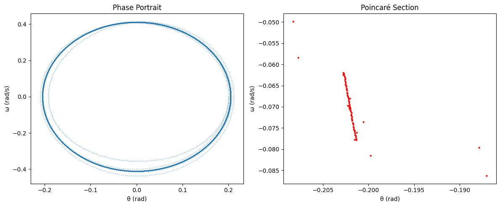

1. Equation of Motion
A simple pendulum consists of a mass \(m\) attached to a string of length \(L\), swinging under the influence of gravity. The equation governing its motion is:
Where:
- \(\theta\) is the angular displacement (radians).
-
\(g\) is the acceleration due to gravity ($ 9.8 $ m/s²).
-
\(L\) is the length of the pendulum.
-
The term \(\sin(\theta)\) accounts for the restoring torque due to gravity.
This is a nonlinear second-order differential equation, making it difficult to solve analytically for large angles.
2. Small-Angle Approximation
For small angles where $ \theta \approx \sin(\theta) $ (in radians), the equation simplifies to:
This is a linear second-order ordinary differential equation, similar to a simple harmonic oscillator.
3. Solution for the Simple Pendulum
For small oscillations, the solution takes the form:
Where:
- \(\theta_0\) is the initial amplitude.
-
\(\phi\) is the phase constant, determined by initial conditions.
-
\(\omega\) is the natural frequency of the pendulum, given by:
4. Energy of the Simple Pendulum
The total mechanical energy $ E $ is the sum of kinetic and potential energy:
Where:
Kinetic Energy
Potential Energy (measured from the lowest position)
The total energy remains constant for an ideal pendulum:
5. Phase Space Representation
A useful way to visualize pendulum motion is in phase space, plotting angular velocity $ \dot{\theta} $ against angular displacement $ \theta $. The phase portrait shows closed curves for undamped motion, representing conservation of energy.
6. Frequency of Oscillations
The period of oscillation $ T $ for small angles is given by:
For large amplitudes, the period must be corrected using elliptic integrals:
where:
For small oscillations, we can approximate:
7. Numerical Solution using Python
Since the nonlinear equation:
import numpy as np
import matplotlib.pyplot as plt
from scipy.integrate import solve_ivp
# Parameters
g = 9.8 # Gravity (m/s^2)
L = 1.0 # Length of pendulum (m)
t_span = (0, 10) # Time span for simulation
initial_conditions = [np.pi / 4, 0] # Initial conditions: [theta(0), theta'(0)]
# Differential equation for the simple pendulum
def simple_pendulum(t, y):
theta, theta_dot = y
dtheta_dt = theta_dot
dtheta_dot_dt = - (g / L) * np.sin(theta)
return [dtheta_dt, dtheta_dot_dt]
# Solve using Runge-Kutta method
solution = solve_ivp(simple_pendulum, t_span, initial_conditions, t_eval=np.linspace(0, 10, 1000))
# Extract solution
t = solution.t
theta = solution.y[0]
theta_dot = solution.y[1]
# Plot Angular Displacement vs Time
plt.figure(figsize=(10, 6))
plt.plot(t, theta, label="Theta (rad)")
plt.title("Simple Pendulum Motion")
plt.xlabel("Time (s)")
plt.ylabel("Angular Displacement (rad)")
plt.grid(True)
plt.legend()
plt.show()
# Plot Phase Portrait
plt.figure(figsize=(8, 6))
plt.plot(theta, theta_dot)
plt.title("Phase Portrait of the Simple Pendulum")
plt.xlabel("Theta (rad)")
plt.ylabel("Theta' (rad/s)")
plt.grid(True)
plt.show(


